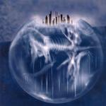

| Artist: | Eyestrings |
| Title: | Burdened Hands |
| Label: | Split Difference SDR78001 |
| Length(s): | 66 minutes |
| Year(s) of release: | 2004 |
| Month of review: | [03/2004] |
| 1) | Recovery | 10.00 |
| 2) | Itchy Tickler | 4.05 |
| 3) | Dead Supermen | 6.37 |
| 4) | Anachronism | 5.42 |
| 5) | Funnel | 4.28 |
| 6) | Just A Body | 4.59 |
| 7) | Slackjaw | 8.45 |
| 8) | Nothing | 5.09 |
| 9) | Time Will Tell | 3.36 |
| 10) | Empty Box | 12.37 |
A track as Itchy Tickler is a bit playful, snappish in a way, with its biting vocals and to the pointness. The tempo is pretty high, and the track feels like a heavily instrumentated Ben Folds track.
Dead Supermen has a bit of a lazy feel about it, vocally led, with the guitar and piano gaining in strength as the track progresses. And shortly before the end the guitar moves to a strong climax, to lead to a still pretty grand finale.
The theme of Anachronism has a mesmerizing feel about it. The strong basis of mellotron synth and guitar is as before. Parmenter's vocals keep showing their strength, fitting whatever atmosphere the track has. This track has the wonderful flow that completely emerges one, jeez, what a great track!
The double vocals in Funnel at times remind a little of early Godley & Creme solo works. This track is more riffy at times, although the progressive themes keep coming through, working up towards a pretty nice climax.
Just A Body has an interesting tongue in cheek look at the human body, observing as dryly as Crack The Sky used to do. Even though at times there is a CTS-like lightness in the vocals elsewhere too, nowhere is it as clear as here. This is enhanced by the short polka intermezzo.
Slackjaw is almost Tom Waits, Parmenter sings in a hoarse manner, and with the piano the feeling's almost there. Ok, the happiness of the track is more Ben Folds than Tom Waits, but it's the thought that counts. As the track progresses synth and guitar move more to the fore. The instrumental outro starts out jazzy on piano to be slowly taken over by synth, mellotron and guitar, enveloping all.
Nothing is a song, Fender Rhodes, vocals and rhythm, not the sort of track as has gone before.
Time Will Tell is a shortish track with loads of piano and guitar, once again bringing Ben Folds to mind.
Empty Box starts out as more of a melodic track, with gentle singing and a rather normal guitar solo after a couple of minutes. This bridge, however, doesn't return to the original theme, but takes the track further along on a Disciplinary trip.
Where last year's start was pretty poor, this year sets a pretty high goal so early on. It would only be the year where an album like this would not make it into my top three. Great stuff.